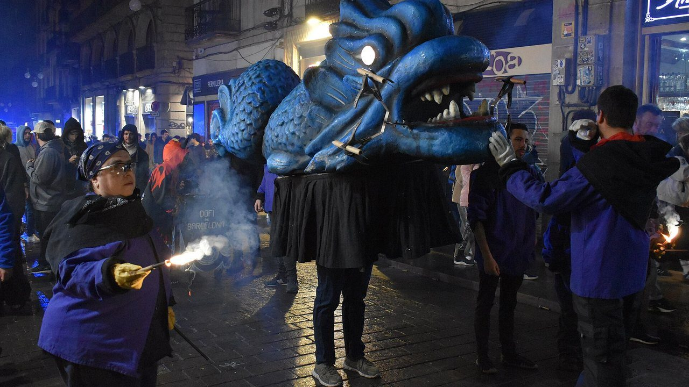

Race, La Mercè, Barcelona

Behind
Best +0:01
371W
Target 418 W-47 W
- Cadence
- 87rpm
- Heart
- 140bpm
- Speed
- 26.5km/h
Work10 of 24
0:46
Next: · 2:30 at level 11
+0.1%
9 m climbed
4.58 km
21
Resistance / 32
Solo races your best-time ghost: position reads Ahead or Behind, and solo alone gets a Pause button. Frozen at 10:44.